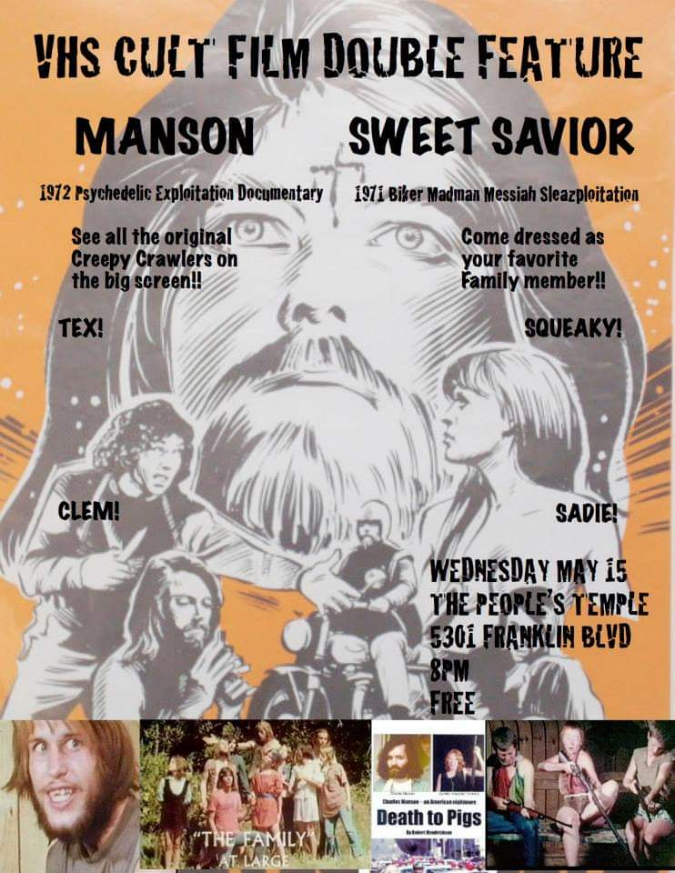
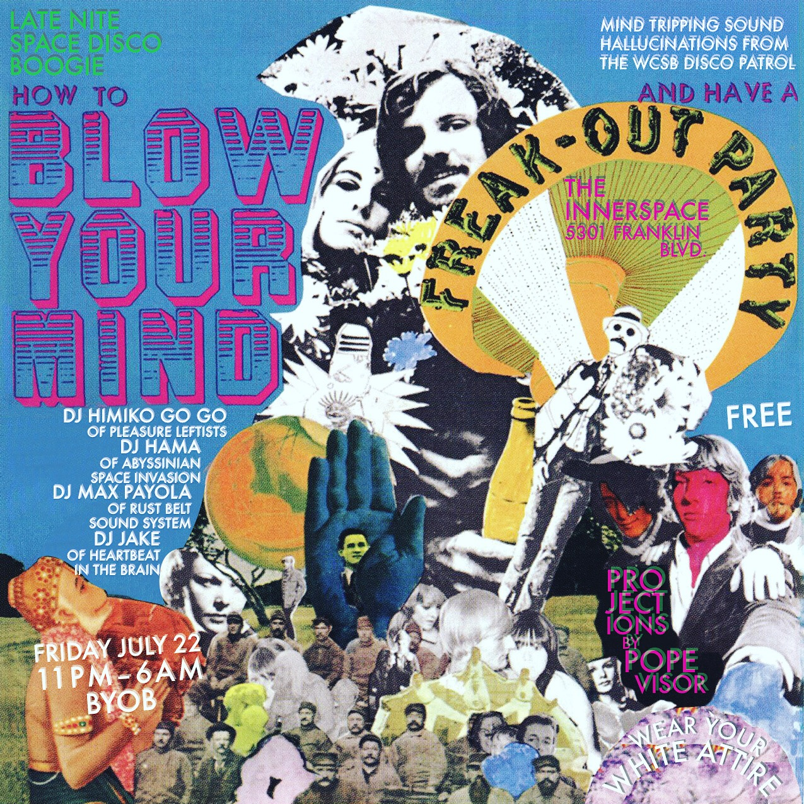
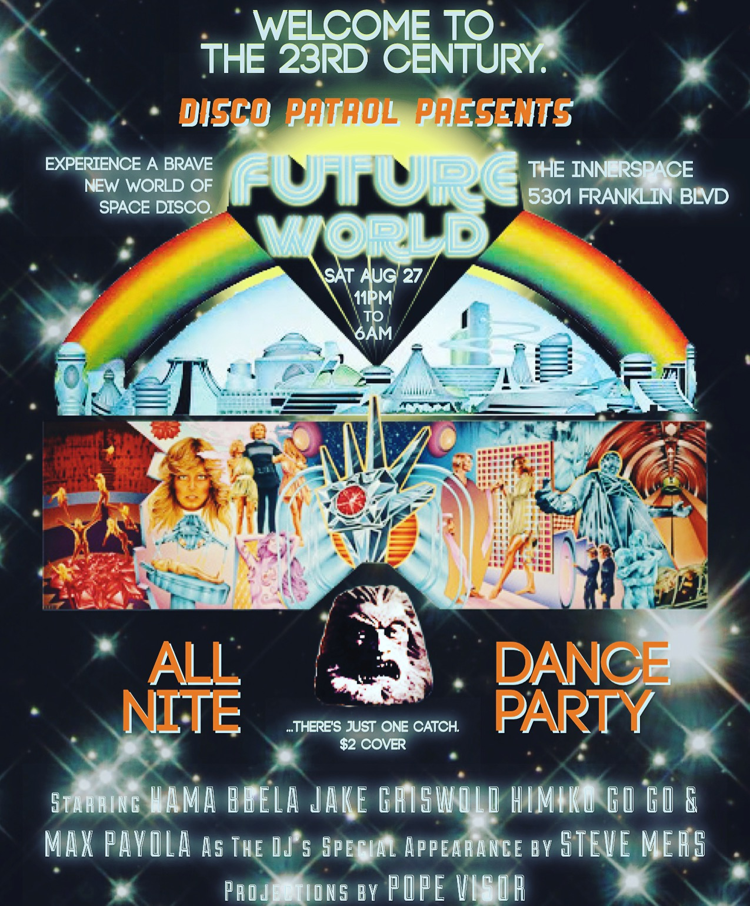

The Innerspace
DIY Space known for hosting free underground film screenings & immersive live music events.
Active 2013-2018.
Event Flyers
Oral History by Jake Griswold
- Founder of The Innerspace
Before opening what would eventually be known as The Innerspace, Jake Griswold began hosting film screenings at the Bela Dubby—an “almost” DIY spot/coffee shop formerly located in Lakewood. On his first night, sometime in January of 2010, he screened a concert film which he helped produce for WCSB’s Halloween Ball. The film was only 45 minutes long, so he paired it with a punk film called Class of 1984. These double-feature movie nights would continue monthly until the venue closed in 2012.
JAKE: I like the idea of a double feature because somebody could just wander in. If you’re going to a movie, the movie show time is at 8:15. You gotta be there at 8:15 or else you’re stuck out. But with a double feature, people could wander in at any time instead of the door being shut. I like more of a communal experience.
-

Around the beginning of 2013, a friend introduced me to this guy Mark who had just purchased this giant Vietnamese Buddhist Temple, straight from the group after they moved out. I told him I’d help him repair the spot and yeah, we started doing movie nights there. I helped him redo the ceilings, we painted all the walls white and kinda cleared out that space and set it up so I could project right onto the walls. And we did our very first event there May 1st 2013… May Day. That was the beginning of that. And it wasn’t called The Innerspace back then. At the beginning it was called The People’s Temple.
I started out showing cult movies, like literal double features about cults. After I ran out of cult double-features it would be like ‘malfunctioning robot night’ or ‘haunted house night’ or ‘girl gang double feature.’ Whatever different weird topics, I could pair up movies together that would be kinda fun. And my friend would bring a pizza or two to share every week, so we’d have an intermission with free pizza. We had a pretty nice setup, we had couches set up in there. The screen was very big, just having the wall painted white, it made the screen more immersive, having it blown up so big. Even VHS blown up that big looks great.
The main principles of the place for me was that it was always going to be free—we collected donations—but no one was ever going to get turned away for lack of money. And everybody was welcome, as long as they’re friendly. I thought that would be the way of the future. Trying to get rid of money and stuff.
I was very naïve that first year. Advertising was mainly done by making flyers, which I would make every week, print out from the radio station, and then go and post all over… around Gordon Square, Ohio City, Lakewood, I’m a west sider so mainly the west side. And the people who came that year were mainly people I knew. You’d look around at some of the more well-attended ones and it was a lot of WCSB DJs. But sometimes people would wander in, you’d hear people at the door who aren’t sure whether they’re wandering into someone’s house, not sure if they’re at the right place.
But like I said, I was naïve and would put up fliers at places like the Capitol Theatre. And I soon found out that I had pissed them off pretty good, like this guy came in and was like ‘are you getting permission to show any of these films?’ And I was like, ‘well no, this is just a DIY thing, this isn’t an official thing. Everybody gets in for free, and I’m not showing Hollywood movies. These are independent films.’ They pointed out one movie I’d shown, this really crazy Japanese movie from the 70’s, they were like ‘The Cinematheque showed that movie a couple years ago, and they’re pissed.’
So I started to look at everything, the Cinematheque schedules, the Capitol schedules, I really tried not to do any crossovers with any of the other theaters. They were considering calling the FCC, MGM, whoever. So after that I was pretty careful. But otherwise that first year went by pretty smoothly, we had a 6-month long run. Then I shut it down for the winter and went traveling like I usually do.
In December 2014, musician John Elliot performed a live score to Trotsky’s 'Zerkalo', which played silently with the subtitles on for the film’s duration. Jake loved the idea of events that combined different artistic disciplines and saw a growing need for more immersive live music events in general. In particular, he was influenced by the disco scene he DJ’d/attended during his yearly trips to Mexico and South America. Him and 3 other WCSB DJs started an event called Disco Patrol, which began in the Mahall’s basement.
JAKE: In the Summer of 2015, we made flyers for our first [Disco Patrol] at The People’s Temple, and that’s when we got our first visit from the city. This city inspector came and asked us about running an illegal movie theater. Said ‘this place is not zoned for this, you can’t be having events here, and we’re gonna fine you if you don’t stop doing it.’ So that was the first time I changed the name from The People’s Temple to just ‘The Temple,’ I was trying to be clever so I could advertise more on Facebook. We stopped doing movie nights for a while and moved over to 78th Street Studios to let it die down.
Before the city inspector’s visit I had started having guest hosts and opening it up to others to do their own screenings. My dream was to have the space open to different community members and even have people come in from different countries to show movies. I just had these dreams—you know, we just did pizza because it was practical and there was no kitchen—but you know, we’d have hosts and cuisines and films from different countries. That was my dream for that space.
But in April 2016 I was more determined than ever to get the dance
parties going. I changed the name to The Innerspace to throw the
city off my trail. I had these concepts for the dance parties. For
the first one (June 2016), I borrowed projectors from a bunch of
different people, and I instructed everyone (of course not everyone
did) to wear all-white clothing, and we were gonna project onto them
from above, so everyone on the dancefloor becomes a kinda moving
projection… It was still under the Disco Patrol banner that I did
under Mahall’s. "Disco Patrol Presents: How to Blow Your Mind & Have
a Freak Out Party." That was the name of the first one.
-

-

The second party was called “Disco Patrol Presents: Future World,” and we got all these projections, a lot of VHS tapes, all these weird old sci-fi movies, and tried to get the décor all futuristic. That one got a bigger audience, like 80 people showed up to that, so that was June/July.
In August, we did a Zodiac Killer party, where Haley [singer of Pleasure Leftists] made buttons of everyone’s zodiac sign—We’re like alright, we’re gonna have different sections of the room… earth signs over here, fire signs over here, and everybody wears the button of whatever their sign is. And we’re doing fire visuals over here, water visuals over here etc. We even hired a psychic and had a table set up for palm readings. We weren’t always totally successful—but we had far-reaching ideas to make these immersive environments. Still all donation-based and BYOB.
I think doing the parties attracted more people to the movie nights, which was my main goal… to get more people to see these old weird movies. You’d never know who was gonna show up, and that element was so essential. I loved meeting new people over crazy films.
The City of Cleveland’s tensions with The Innerspace thickened after its 2017 Halloween party, which Jake estimates 200+ people showed up to. From that point on he attempted to keep his events contained.
JAKE: Mid-January my friend was coming into town and wanted to DJ, so I wanted to throw something low-key for them, nothing too crazy. “Disco Patrol Presents: Lunar Lounge,” and that was our last party and the night we got raided. It was a huge snowstorm and I probably should have cancelled it. There was not a huge crowd, maybe like 50 people, but we saw the cops driving up and down the street before the party even started. While I was DJing and somebody came up to me like ‘hey there’s a cop in the building’ and I look and there’s a guy on the dancefloor who was so obviously an undercover cop. He was going around trying to buy beer. I went down into the basement later and there’s a buncha people standing there passing around a bowl, and the cops were standing right there. I went up to them like, 'hey guys, see that guy over there… like I’m pretty sure he’s a cop. You should probably not do that.' There were cops parked in front with their lights on and a storm of them comes in, like cop after cop telling us to shut down the music and before we can even do anything they start unplugging stuff. This cop tells us ‘yeah there was a major drug deal going down in the basement’… That’s what they used as their excuse while they were there, saying there was a massive cocaine deal going down in the basement.
So they rolled up all these fines, they got us on 13 different violations. A meeting was set up between us and Mark with the city councilman and the chief of police a few days later. You know politicians, they don’t wanna be the bad guys. They were like ‘we want to work with you guys, to bring you guys up to code, we appreciate what you’re doing in our community, we want you here, we just wanna make sure that everything’s above board... We don’t want another Ghostship.’ I had gotten the worst flu and lost my voice so I couldn’t really state my case.
What I really wanted, even if we had to shut down the parties, was to keep that space for movie nights. It wasn’t just the movie nights, we were feeding people and stuff too, we had free food for people for the 5 years we were there. I had really thought of us as a positive thing for the community. We didn’t want complaints from the neighbors, we didn’t want to annoy people in the community, we wanted it to be a good resource. But they were like ‘well your problem is if you open it up to the public with these fliers saying everyone welcome. If it’s a private thing, and it’s just your friends, you can do it.’ But it was essential to me to keep it open to everyone, and that’s where they got me. That’s what made it illegal I guess.
• • •